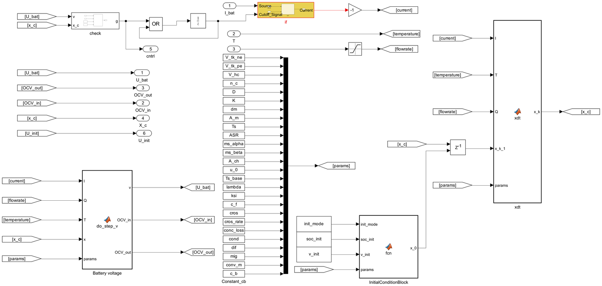
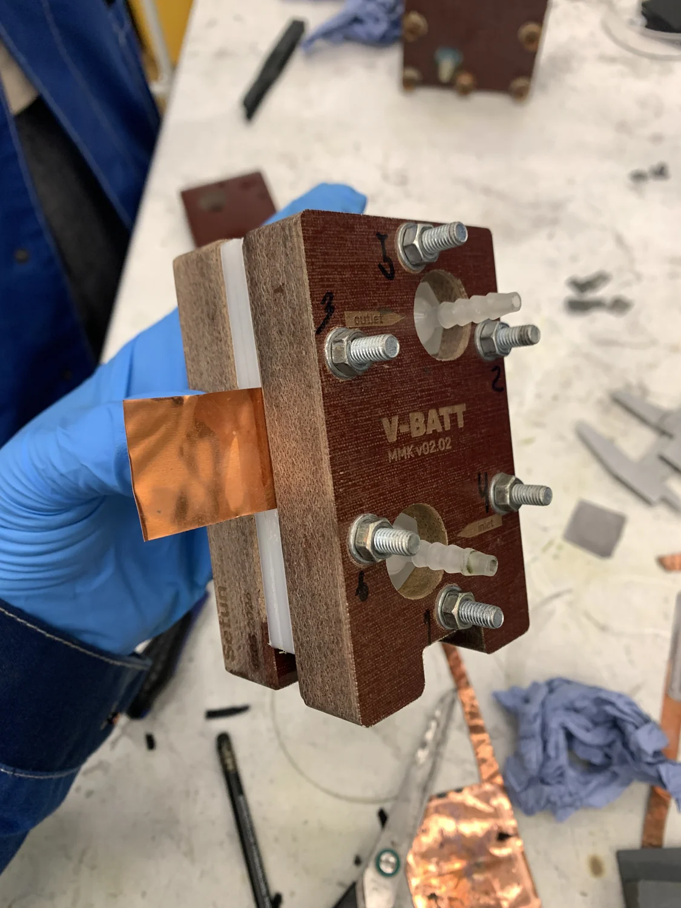
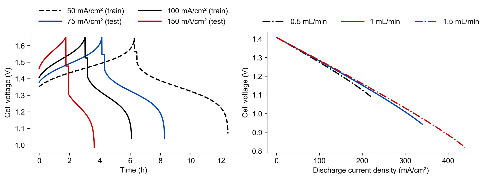
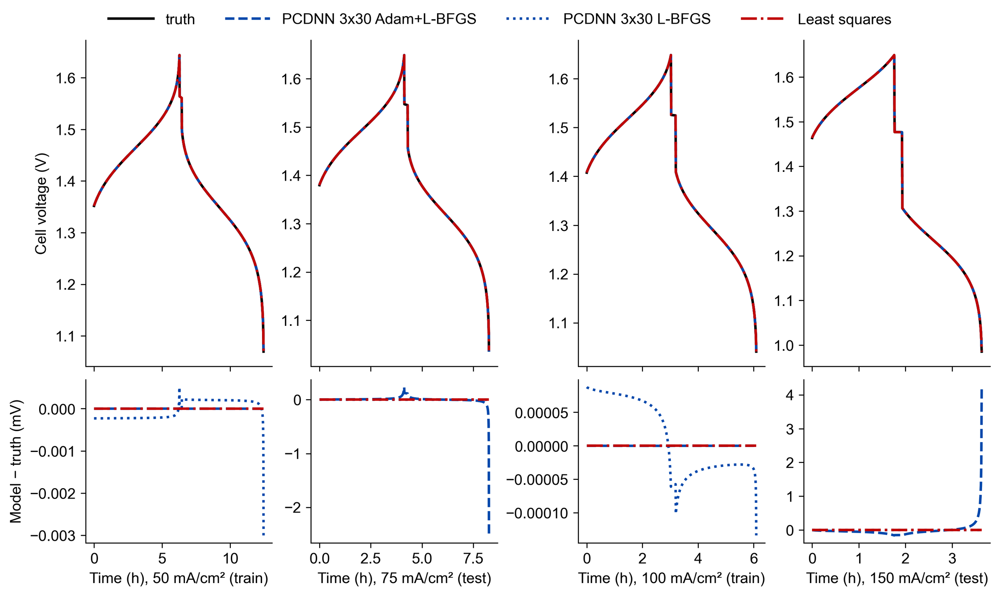
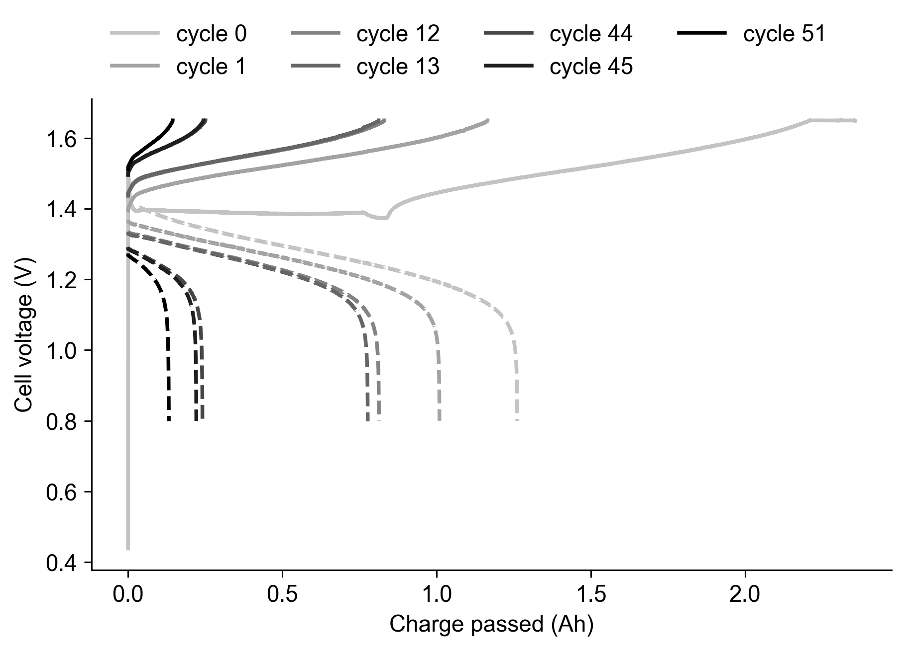
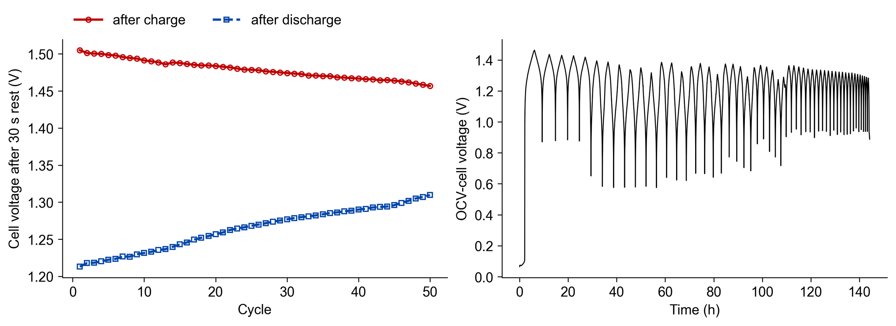

Research / Main study
Flow-battery modelling
and diagnostics.
Identifying physical model parameters from battery measurements, and testing what those parameters can tell us about degradation.
Model foundations
A model that meets
the measurements.
In the first year of my MSc, I built a zero-dimensional flow-battery model in Simulink using the laboratory’s established physics. The model tracks electrolyte concentrations and stack voltage, can start from state of charge or measured voltage, and includes charge and discharge protection.
I fitted it to six polarisation curves and four laboratory charge–discharge cycles using a two-stage identification method adapted from the lab’s published work. A shared physical parameter set reproduced the four cycles with a mean voltage RMSE of 0.065 V in Simulink; area-specific resistance was retuned for each current. As an independent check, the fitted formal potential lands within 4 mV of the directly measured open-circuit voltage, and the fitted initial state of charge matches a Nernst estimate.
The next question was identifiability. Repeating the fit from different starting points showed that a good voltage fit does not uniquely determine every physical parameter. Formal potential, resistance, and concentration can compensate for one another.
Scope: one five-cell stack and one experimental campaign. The voltage error describes the fitted laboratory cycles; it is not a general battery-accuracy guarantee.

Model structure



Cell design · Current experiments
From CAD
to the cell.
For the current experiments we use new single cells. I use Autodesk Fusion for 3D CAD and assembly modelling of these vanadium flow-battery cells.
The Fusion assembly and the corresponding physical cell show the link between CAD and the laboratory hardware: layered cell components, end plates, fasteners, and electrolyte connections.



Controlled synthetic test
Does a neural fit
recover the physics?
With the model and cell design in place, I adapted the physics-constrained deep neural network (PCDNN) method to our 0D model and compared it with least squares from the same two starting points. Five known parameter sets generate noise-free cycles: training at 50 and 100 mA/cm², with testing at 75 and 150 mA/cm². The neural networks return model parameters as functions of current density; the physical model calculates the voltages.
Both methods recover capacity (Cb), crossover rate (cros_rate), resistance (ASR) and formal potential (U0) accurately. Without polarisation curves, the two mass-transport parameters (km_ref and beta) can compensate for each other: errors reach about 36 % despite an almost exact voltage fit. Fixing them at incorrect values biases the crossover estimate by up to about 6 % at the training currents.
Adding polarisation curves resolves that ambiguity in these tests. Least squares and the L-BFGS-only PCDNN recover all six parameters across all five sets; the latter's errors remain below 0.004 %. Least squares is substantially faster. This controlled test establishes no neural-network advantage or validation on experimental data.
Method reference: He, Stinis and Tartakovsky, Physics-constrained deep neural network method for estimating parameters in a redox flow battery.




| Parameter | True value | Least squares | PCDNN L-BFGS only | PCDNN Adam + L-BFGS |
|---|---|---|---|---|
| A · Cycling only, all six parameters free | ||||
| Cb (mol/m³) | 1467.76 | 1467.76 (-0.000 %) | 1467.76 (+0.000 %) | 1467.76 (-0.000 %) |
| Crossover coefficient | 0.468912 | 0.468912 (+0.000 %) | 0.468912 (-0.000 %) | 0.468912 (+0.000 %) |
| ASR (Ω m²) | 0.000111101 | 0.000111101 (-0.000 %) | 0.000111101 (+0.000 %) | 0.000111101 (+0.000 %) |
| U0 (V) | 1.40687 | 1.40687 (+0.000 %) | 1.40687 (+0.000 %) | 1.40687 (+0.000 %) |
| km_ref (m/s) | 0.000134516 | 0.000128777 (-4.266 %) | 0.000128152 (-4.731 %) | 0.000149997 (+11.509 %) |
| β | 0.515777 | 0.530331 (+2.822 %) | 0.531955 (+3.137 %) | 0.479414 (-7.050 %) |
| C · Cycling plus polarisation, all six parameters free | ||||
| Cb (mol/m³) | 1467.76 | 1467.76 (-0.000 %) | 1467.76 (+0.000 %) | 1467.76 (+0.000 %) |
| Crossover coefficient | 0.468912 | 0.468912 (+0.000 %) | 0.468912 (+0.000 %) | 0.468912 (+0.000 %) |
| ASR (Ω m²) | 0.000111101 | 0.000111101 (-0.000 %) | 0.000111101 (+0.000 %) | 0.000111101 (+0.000 %) |
| U0 (V) | 1.40687 | 1.40687 (+0.000 %) | 1.40687 (+0.000 %) | 1.40687 (+0.000 %) |
| km_ref (m/s) | 0.000134516 | 0.000134516 (+0.000 %) | 0.000134516 (+0.000 %) | 0.000134516 (+0.000 %) |
| β | 0.515777 | 0.515777 (+0.000 %) | 0.515777 (+0.000 %) | 0.515777 (+0.000 %) |
Set 0, range-centre start, estimates evaluated at 100 mA/cm². Parentheses show percentage error; rounded zero does not mean an exactly zero error. This is one illustrative set; the parameter-error figure below covers all five sets and both starts.


Experimental dataset analysis · Nafion 117
The Nafion-117 run.
The next step is to examine measured cycling data. The controlled three-membrane comparison is underway. The first cycling run, with Nafion 117, is complete and its initial analysis is available. Asahi (40 µm) and fumasep FAPQ-375-PP are the remaining planned membranes. The aim is to connect changes in measured performance with the physical parameters of the battery model.
The Nafion-117 record uses a 4 cm² single cell at 0.4 A (100 mA/cm²), with 35 mL of electrolyte per tank. After an initial conditioning cycle, constant-current cycling between 1.65 and 0.80 V uses 30-second rests. The cell-voltage and separate OCV-cell channels cover about 144 hours. This first record contains no polarisation curves.
Discharge capacity fell from 1.009 Ah in loop cycle 1 to 0.132 Ah in cycle 51: about 87 % loss. Coulombic efficiency shows distinct drops at cycles 13 and 45, while voltage efficiency declines more smoothly from 81.4 to 76.1 %. The voltage and OCV traces provide additional evidence for investigating the loss.
These are observations from the first membrane run, not a completed comparison or an identified degradation mechanism. Across 300 tested parameter sets, the current 0D model produced at most about 56 % capacity loss on this protocol. The observed loss therefore remains unexplained within the tested model and ranges; attributing it to membrane crossover would be premature.


| Cycle | Discharge capacity (Ah) | Coulombic efficiency (%) | Voltage efficiency (%) | Energy efficiency (%) |
|---|---|---|---|---|
| 0 · conditioning | 1.261 | 53.52 | 80.96 | 45.60 |
| 1 | 1.009 | 86.60 | 81.40 | 70.49 |
| 12 | 0.813 | 97.88 | 79.51 | 77.83 |
| 13 | 0.777 | 95.66 | 79.54 | 76.09 |
| 44 | 0.241 | 96.09 | 77.22 | 74.20 |
| 45 | 0.221 | 90.51 | 77.22 | 69.89 |
| 51 | 0.132 | 91.29 | 76.05 | 69.43 |
Cycle numbering follows the analysis notebook. The capacity-loss comparison begins at loop cycle 1 and excludes the conditioning discharge.




Instrumentation: OCV and colour reader project.
Next: investigate the electrolyte, OCV and cell-condition evidence, and continue the remaining membrane runs.